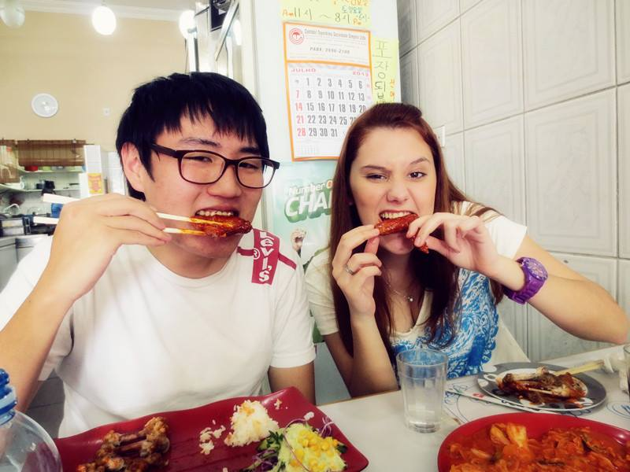

Sobre mim
Rafael Sung Min Lee, nascido em 19/02/92 em São Paulo. Sou o primogênito de toda a geração na
minha
família. Crescendo, percebia minhas diferenças culturais em relação às outras pessoas,
especialmente
nos relacionamentos com pessoas mais velhas, nas comemorações de aniversário, que celebramos no
primeiro
dia do ano e começamos a contar do 1 ao invés do 0, e, principalmente, na comida.
Quando criança, eu tinha uma saúde frágil e passava bastante tempo na casa da minha avó materna,
pois meus pais precisavam trabalhar. Foi lá que aprendi a entrar em contato com a comida e a
cultura
coreana.
Enquanto minha avó cozinhava, eu ouvia histórias do passado e de como as coisas eram feitas
antigamente.
Essas são algumas das minhas memórias mais queridas, especialmente quando ela fazia frango
frito.
Ela passou pelas duas grandes crises da Coreia do Sul e me dizia que ficava muito feliz quando
cozinhava
ou comia frango, pois lembrava da alegria que sentia toda vez que conseguia comer essa refeição.
Com a
comida, pude entender as dificuldades que meus antepassados tiveram que superar e como algo tão
simples como comer pode aquecer nossas almas e nos dar forças para seguir um caminho de
esperança.
Quando criança, eu tinha uma saúde frágil e passava bastante tempo na casa da minha avó materna,
pois meus pais precisavam trabalhar. Foi lá que aprendi a entrar em contato com a comida e a
cultura coreana.
Enquanto minha avó cozinhava, eu ouvia histórias do passado e de como as coisas eram feitas
antigamente.
Essas são algumas das minhas memórias mais queridas, especialmente quando ela fazia frango
frito. Ela passou
pelas duas grandes crises da Coreia do Sul e me dizia que ficava muito feliz quando cozinhava ou
comia
frango, pois lembrava da alegria que sentia toda vez que conseguia comer essa refeição.

"- After all this time? -Always"
A experiência da Coreia do Sul é um exemplo inspirador de como superar a pobreza e a fome
através de soluções inovadoras e sustentáveis. Essa história se conecta diretamente com os Objetivos de
Desenvolvimento Sustentável (ODS) da ONU, especialmente as metas 1 ("Erradicação da Pobreza") e 2 ("Fome Zero").
Ao escolher este tema, pretendo destacar a importância da alimentação como ferramenta de
desenvolvimento e transformação social. A história da Coreia do Sul demonstra que a carne de ave pode ser mais
do que apenas um alimento: pode ser um instrumento de mudança e um símbolo de esperança para um futuro
livre da pobreza e da fome.
 Ajudando a minha vó na cozinha
Ajudando a minha vó na cozinha
Minha trajetória pessoal e a história da Coreia do Sul revelam a profunda ligação entre
cultura, alimentação e resiliência. Desde as memórias de infância, passando pelos ensinamentos
de minha avó, até a compreensão dos desafios enfrentados por nossos antepassados, é evidente como
algo tão simples como o frango frito pode simbolizar esperança, conforto e superação. Assim como a Coreia
do Sul conseguiu transformar a adversidade em prosperidade através de soluções inovadoras, acredito
que cada um de nós pode encontrar força e inspiração nas pequenas tradições e nas refeições
compartilhadas. Ao celebrar e preservar esses momentos, contribuímos para um futuro mais sustentável, onde a
erradicação da pobreza e da fome não são apenas metas, mas uma realidade alcançável para todos.